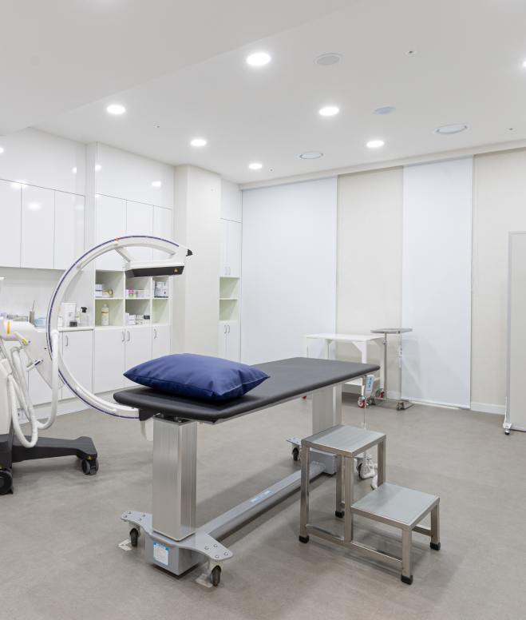
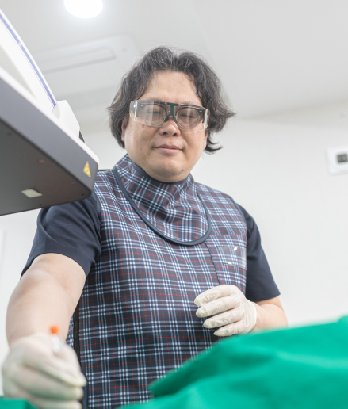

원스톱 진료
진료실 완결형 시스템
삼성G정형외과는 찾아주시는 모든 분들이 편안한 일상으로 돌아갈 수 있도록
한 분 한 분의 이야기에 귀 기울이며 충분한 시간을 할애하고,
꼼꼼한 진단과 개인별 상태에 맞는 치료를 제공합니다.
진료부터 필요한 처치까지,
하나의 흐름으로 이어집니다
의사가 직접 상태를 확인하고 필요한 경우 진료실에서 처치까지 연결합니다.
불필요한 이동과 대기 부담을 줄이고 일관된 진료를 이어갑니다.
-
STEP 1
상태 직접 확인
증상과 움직임, 검사 결과 등을 의료진이 직접 확인해 진료 방향을 결정합니다.
-
STEP 2
필요한 처치 연계
진료 후 필요한 경우 주사치료 등 적절한 처치 과정으로 신속하게 연결합니다.
-
STEP 3
지속적인 경과 관리
치료 후 증상 변화를 확인하고 상태에 맞춰 다음 진료 계획을 조정합니다.


진료의 연속성을 높이는
진료실 완결형 시스템
의사가 진료실에서 증상과 상태를 직접 확인하고,
처치까지 자연스럽게 이어질 수 있도록 진료 과정을 구성했습니다.
불필요한 이동과 대기 부담을 줄이고, 진료부터 이후 관리까지
일관된 흐름으로 이어지도록 돕습니다.